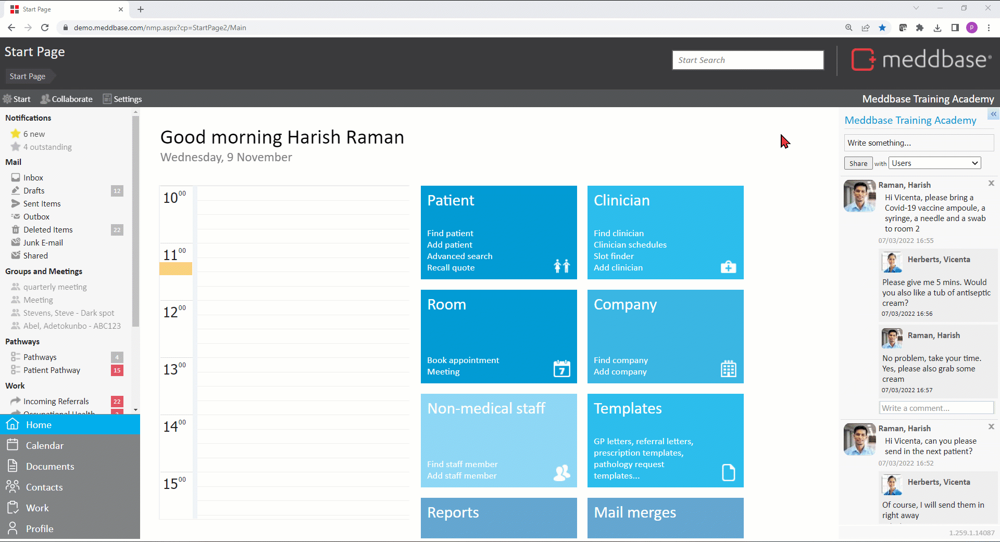
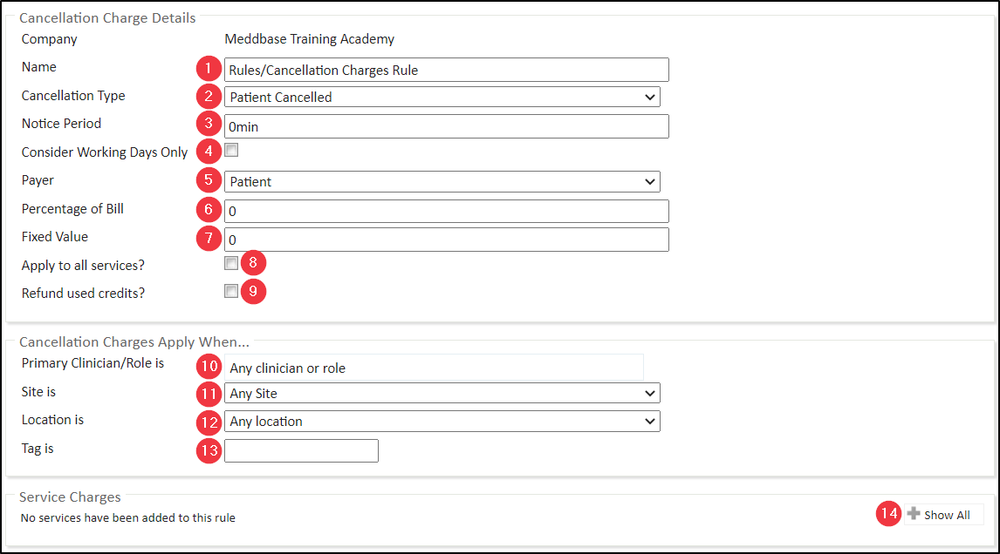
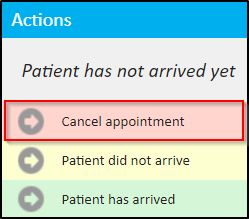
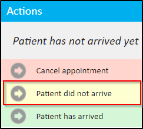
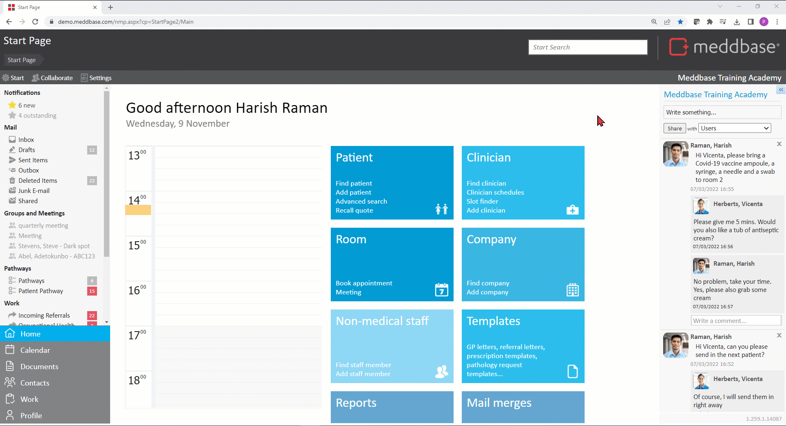

If you wish to charge the patient or their preferred payed for cancelling, nor arriving for or rescheduling an appointment (or all of the above) in Meddbase, these charges can be triggered automatically within a specified notice period and when other, specified conditions are met.
This article outlines:
There are configuration activity that needs to take place before this rule can be used effectively, and these are:
*You can still charge fixed amounts for Cancellations, DNAs and/or Rescheduling of appointments even if you provide these appointments free of charge.
To configure the Multiple Procedure Rule:
1. From the Start Page navigate to Admin > Billing Rules.
2. Expand the company icon where you wish to store the rule* and click +Add rule.
*You can configure any billing rule (except Charge Band) under any given entity's icon, and that entity will own the rule, however it can be used by other companies.
This means you can configure 1 rule, e.g. under your chamber company, and add it to multiple Charge Bands irrespective of which entity a given Charge Band belongs to, saving you the trouble of creating the same rule multiple times.
3. Select Cancellation Charges Rule.
4. Name the rule accordingly.
Adding a Folder name / in front of the rule name will create a folder (if it doesn't exist already) and move the rule to that folder

5. Configure the rule, as per the options described below.

1. Name - set a name for the rule
2. Cancellation Type* - select the event type this rule will apply to:
This Cancellation Type only applies when a user clicks Cancel appointment on the Appointment Home page and confirms this action within the notice period.

This Cancellation Type only applies when a user clicks Patient did not arrive on the Appointment Home page and confirms this action.

When this Cancellation Type is selected the Notice period field in the rule becomes obsolete (greyed out), as by the nature of this event you can only determine that a patient did not arrive past the appointment start time.
This Cancellation Type only applies when a user clicks Change date, time, attendees or notes, on the Appointment Home page, changes the date and time of the appointment and Saves the amended booking within the notice period.
*Should you wish to charge for all 3 Cancellation Types you can add 3 Cancellation Charges Rules to the relevant Charge Band(s), each dealing with a different Cancellation Type and each having its own applicability settings.
3. Notice Period - state the notice period the rule will apply within for Cancellations or Rescheduling. For a notice period to apply it must be expressed with a positive integer (1 and above) followed by min (minutes), h (hours), w (weeks) e.g. 360min, 24h, 1w etc.
4. Consider Working Days Only - when this box is checked, the above notice period will only apply during what is considered working days in your chamber*
5. Payer - this dropdown allows selecting the party responsible for paying the cancellation/DNA/reschedule charge (to be the Debtor on the invoice):
6. Percentage of Bill - set the percentage of the cost of the appointment and services to be charged to the patient/patient's preferred payer. This can be expressed with an integer with up to 2 decimal places, e.g. 30.55
7. Fixed Value - set the fixed value to be charged to the patient/patient's preferred payer for cancelling/DNA/rescheduling the appointment. This can be expressed with an integer with up to 2 decimal places, e.g. 100.05. Either a Percentage or Fixed Value should be set, not both.
8. Apply to all services? - when this box is checked, this rule will apply to all Appointment Types provided on the Charge Band this rule is added to.
9. Refund used credits? - when this box is checked and this rule is added to a Charge Band that also contains a Service Credits Rule and they both reference the same Appointment Types, cancelling/DNA/rescheduling an appointment booking that had used a credit will result in that credit being refunded.
10. Primary Clinician/Role is - clicking in this field opens the Account search dialog, where the user can select a Role Group or search for a Medical Person (Clinician/Doctor) this rule will apply to, so that it will only trigger the charge when the appointment is booked with a member of the specified group or the individual selected.
11. Site is - this dropdown allows selecting the Site this rule applies to, so that it will only trigger the charge when the appointment is booked at that site. You can add sites to your chamber under Admin > Common Catalogues > Sites > +New Site
12. Location is - this dropdown allows selecting the Location (typically a Room) this rule applies to, so that it will only trigger the charge when the appointment is booked at that location. You can add sites to your chamber under Admin > Common Catalogues > Sites > +New Site > +New Location
13. Tag is - an alphanumeric code can be entered here, resulting in this rule only applying on clinician sessions with the same tag. Clinician sessions can be tagged by navigating to Clinician Details > Site scheduler > Session > Tag.
14. Service Charges - clicking +Show All > Appointment > +Add allows selecting (ticking the box) the appointment type(s) this rule will apply to. When Apply to all services? box is checked, this section is disabled.
As with any billing rule, the Cancellation Charges Rule must be added to relevant Charge Band(s) to perform the desired action and trigger charges for appointment cancellations/DNAs/rescheduling.
To add the rule to a relevant Charge Band:
1. From the Start Page navigate to Admin > Billing Rules.
2. Expand the icon of the entity (company) to which you wish to apply the rule. If the relevant entity is not visible, you can add it to the view via the Add Companies field.
3. Click on the relevant Charge Band(s) you wish to apply the rule on.
Every entity (company) can have as many Charge Bands configured as needed, e.g. an Employer having multiple Charge Bands for different groups of employees or an Insurer having multiple Charge Bands for different insurance tiers.
4. in the Charge Band Rules section click +Add rule.
5. In the Add Rules To Set dialog window, expand the entity where you created/stored the rule.
6. Click the rule and it will be added to the Charge Band.
